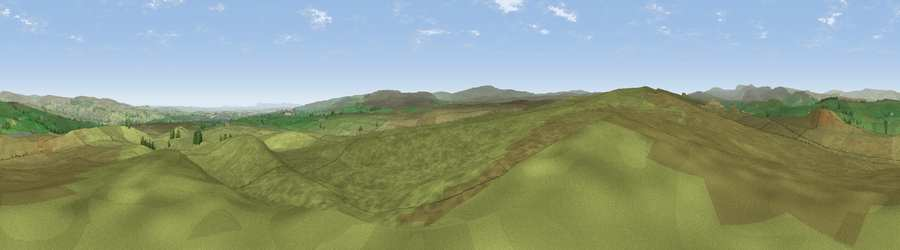

Viewpoint near Bowes
#9618 in England · top 20% of its area beats it · near BowesThe view, rendered

A 360° render of this exact spot computed from the terrain model, tree cover and land cover — summer colours, afternoon light, calibrated against photographs of famous viewpoints. Real trees, hedges and buildings will differ in detail.
The panorama
Grey silhouette: terrain skyline in each direction (720 bearings, Earth curvature and refraction included). Dashed green: skyline with trees (+15 m) and buildings (+8 m) as obstacles. Blue strip: how far the ground is visible on each bearing.
Where the view opens
Wedge length = distance to the farthest visible ground on that bearing (vegetation-aware). Rings at 10, 25 and 50 km.
What fills the view
98% grassland · 1% woodland ·
Angular shares of the visible panorama (visual magnitude), not map area. Landscape diversity 0.06 (0–1 Shannon).
Key numbers
More beautiful places nearby
The staircase of upgrades: each row has a higher view potential than everything closer. Driving times are estimates from straight-line distance, calibrated against real road routing — check an actual route before setting out.
| Place | Direction | Drive | Score |
|---|---|---|---|
| Viewpoint c10394_7847 | NW · 5 km | ~11 min | 65.9 |
| Viewpoint near Mickleton | N · 5 km | ~11 min | 69.7 |
| Viewpoint near Middleton-in-Teesdale | NNW · 8 km | ~16 min | 70.2 |
| Viewpoint c10288_7742 | WSW · 9 km | ~18 min | 70.3 |
| Viewpoint near Eggleston | NE · 9 km | ~18 min | 76.0 |
| Viewpoint c10024_7603 | SW · 22 km | ~37 min | 76.9 |
| Great Dun Fell | WNW · 29 km | ~46 min | 77.8 |
| Little Dun Fell | WNW · 30 km | ~47 min | 78.4 |
54.54577, -2.06296 · source: screening · position refined by local search. Computed location — check access rights before visiting.